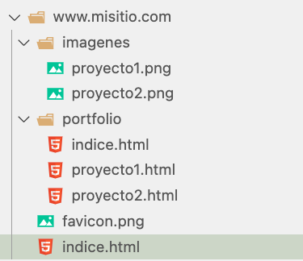
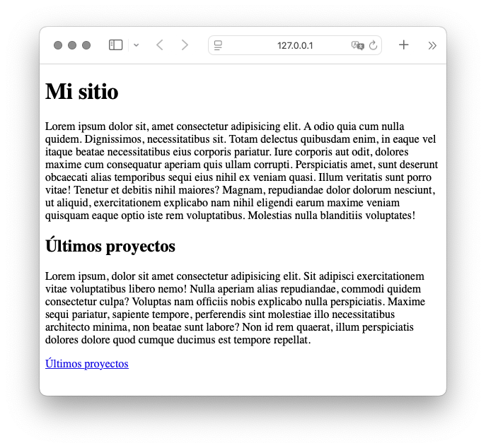
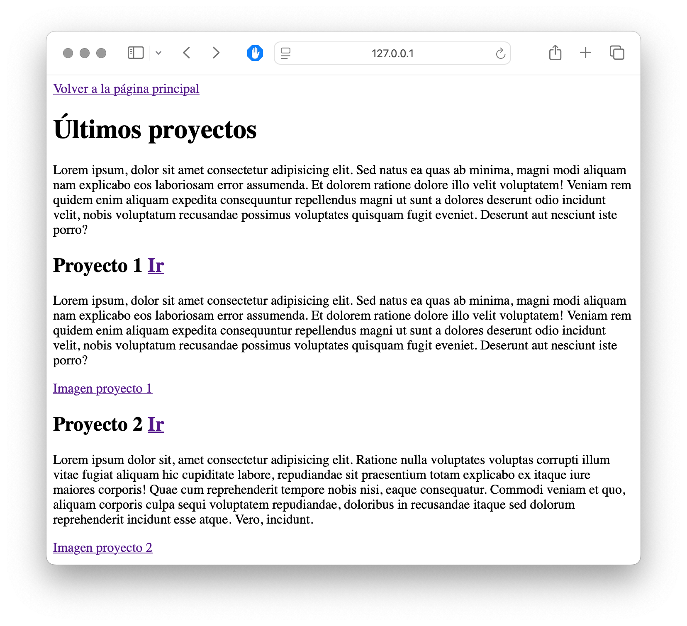

Actividad 4
A partir de la estructura de directorios y archivos indicada en la imagen "Estructura".
- Crear la página de Indice.html que está dentro del directorio principal, una estructura similar a la imagen
"Indice.html".
- Crear la página de indice.html dentro de la carpeta portfolio, una estructura similar a la imagen
"Portfolio/Indice.html"
- Añadir dos imágenes que quieras para probar los enlaces.
- Puedes crear más enlaces si quieres en tu ejercicio.
- Recuerda que para hacer los párrafos automáticos en Visual Studio lo puedes hacer con Lorem, en un shortcut
que nos da un párrafo de las líneas que necesitemos.
Resultado
Estructura

Indice

Portfolio -> Indice
